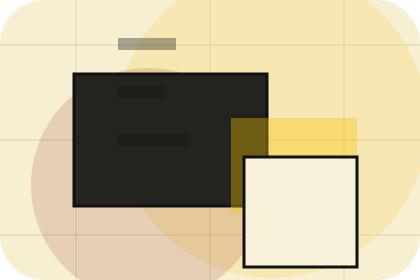
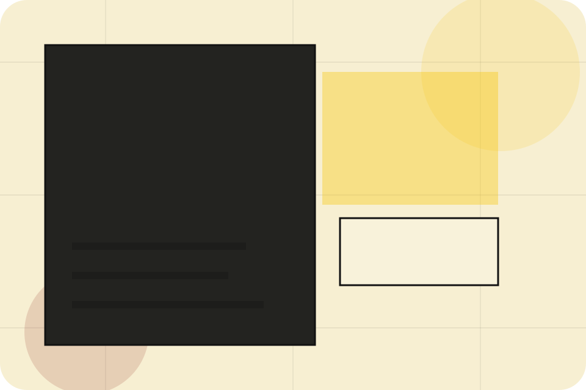
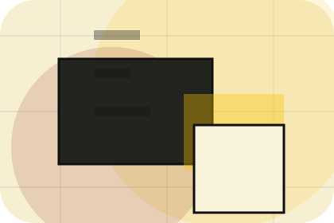
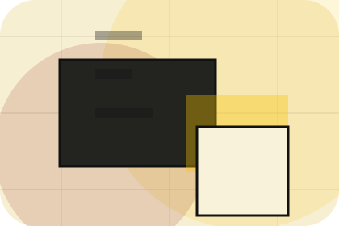
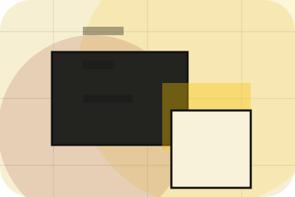
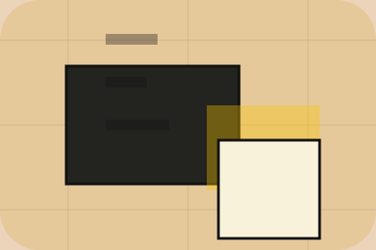

Evidence
Visible proof that helps visitors believe the claims behind standards.
Platform / 01
Platform opens as a clear publishing decision hub: what Index offers, who it helps, why it matters, and which route to take first.
The first screen combines positioning, proof, primary action, and fast internal navigation, so people can act immediately or compare the rest of the platform route with context.
Editorial masthead hero
Select the closest route and Index keeps the next step, proof, and follow-up expectation aligned with authority and discovery.

Platform / 02
Mission makes the contact path concrete: what to send, how the response works, and what Index needs before visitors subscribe.
The section reduces contact friction by naming the channel, expected detail, privacy path, and response expectation instead of dropping visitors into a generic form.
Explore PlatformWhat information helps Index respond with a useful answer instead of a generic reply.
How the visitor should think about response, urgency, location, or availability.
The expected next message keeps scope, timing, and the first practical step clear.
Platform / 03
Editorial makes the contact path concrete: what to send, how the response works, and what Index needs before visitors subscribe.
The section reduces contact friction by naming the channel, expected detail, privacy path, and response expectation instead of dropping visitors into a generic form.
Explore PlatformIndex keeps editorial practical: send the key details, choose the right contact route, and know what kind of reply to expect.
SubscribePlatform / 05
Team introduces the people, roles, or specialist credibility behind Index so the decision feels less anonymous.
The copy ties names, roles, credentials, or availability back to the decision on the page instead of treating profiles as decorative biographies.
Explore PlatformThe person, team, or specialist function connected to team is easy to understand.
Credentials, responsibilities, or availability are tied to the visitor's decision, not listed for decoration.

The section explains how to move from profile interest to a practical conversation or booking path.
Platform / 06
Values makes the contact path concrete: what to send, how the response works, and what Index needs before visitors subscribe.
The section reduces contact friction by naming the channel, expected detail, privacy path, and response expectation instead of dropping visitors into a generic form.
Explore PlatformWhat information helps Index respond with a useful answer instead of a generic reply.
How the visitor should think about response, urgency, location, or availability.
The expected next message keeps scope, timing, and the first practical step clear.
Platform / 07
Sources makes the contact path concrete: what to send, how the response works, and what Index needs before visitors subscribe.
The section reduces contact friction by naming the channel, expected detail, privacy path, and response expectation instead of dropping visitors into a generic form.
Explore PlatformWhat information helps Index respond with a useful answer instead of a generic reply.
How the visitor should think about response, urgency, location, or availability.
The expected next message keeps scope, timing, and the first practical step clear.
Platform / 08
Governance makes the contact path concrete: what to send, how the response works, and what Index needs before visitors subscribe.
The section reduces contact friction by naming the channel, expected detail, privacy path, and response expectation instead of dropping visitors into a generic form.
Explore PlatformIndex keeps governance practical: send the key details, choose the right contact route, and know what kind of reply to expect.
SubscribePlatform / 09
Trust gives the proof layer for platform: standards, evidence, and reassurance that make the next decision feel grounded.
Instead of relying on vague claims, Index presents visible standards, process cues, and proof artifacts that help publishing visitors judge fit.
Explore Platform

Visible proof that helps visitors believe the claims behind trust.
Platform / 10
Index closes the platform route with a clear action, a quick reminder of the value, and a low-friction way to subscribe.
Visitors who are ready can use the primary action. Visitors who are still comparing can scan the section links, proof, and support routes before they subscribe.
SubscribeThe final block keeps the choice simple: act now, compare one more proof route, or send enough detail for a focused response.
Subscribeauthority and discovery
A knowledge platform with magazine columns, archive search, author cards, and newsletter conversion. Platform ends with a direct path to subscribe, plus enough context for visitors who still need to compare.

SubscribeInformation is provided for planning and should be reviewed for the final client, location, and operating rules.